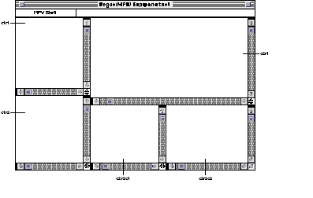

SYNTAX AddPane [window] [-p paneSpec] [-x xSplit] [-y ySplit] DESCRIPTION The AddPane command allows you to split a window or window pane by inserting a horizontal or vertical scroll bar. Use the -p option and either the -x or -y option to specify the window pane and scroll bar. INPUT None OUTPUT None, unless you do not specify -x or -y. In this case, AddPane writes to standard output the AddPane commands that produced the panes in the target window. ALIAS RESOLUTION A partial pathname or a pathname containing Finder aliases may be substituted for a window name as long as the pathname specifies the name of an open window. Note that using a shell variable to designate a window is usually faster than using an alias. STATUS
AddPane can return the following status codes:
PARAMETERS window Specifies the window that AddPane divides into panes. If you do not specify a window, AddPane divides the target window. OPTIONS -p paneSpec Indicates the window or window pane to be split by using a pane specification. The specification concatenates the strings cnn and rnn, where c and r represent the column and row, respectively, and nn is an ordinal number. For example, AddPane accepts c2r2 as a valid pane. When you split a window into multiple panes, many levels of columns and rows are created. That is, the pane specified by c2r2 can be split into two or more panes. You can specify a pane in the first column of c2r2 by typing c2r2c1. If you omit -p or specify -p with the null string (' ') as a parameter, AddPane splits the active pane. -x xSplit Inserts a vertical scroll bar at a distance of xSplit pixels from the left edge of the pane. -y ySplit Inserts a horizontal scroll bar at a distance of ySplit pixels from the top edge of the pane. EXAMPLES The following script creates a new window called "panetest" and splits it into five panes:
New panetest Executing the script creates the window shown in Figure 1. Note that the first AddPane command AddPane -p ' ' -x 177 "{MPW}panetest" is equivalent to AddPane -x 177 "{MPW}panetest" Using the null string (' ') as a parameter to -p or omitting -p entirely causes AddPane to divide the active pane.
 SEE ALSO
|